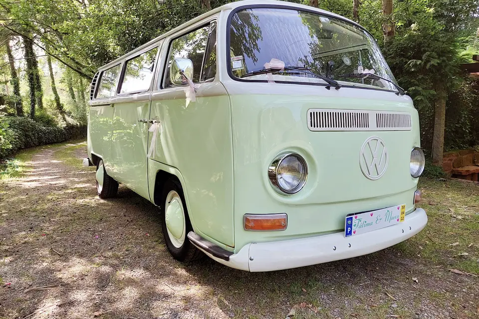
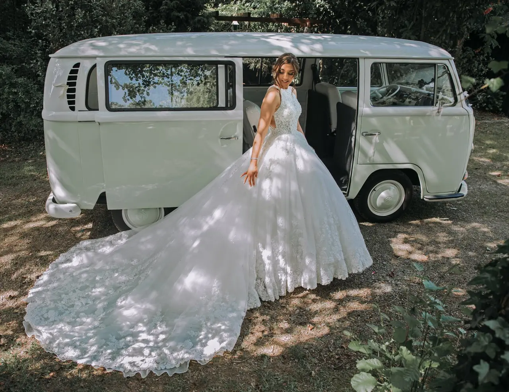
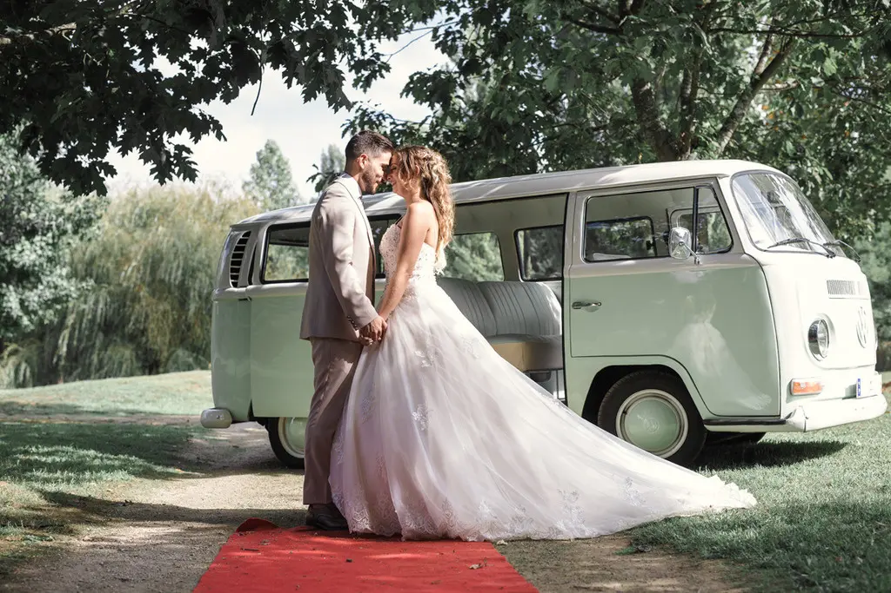

A Flóribela é uma carrinha clássica de 1969 que se destaca pelo seu design único, com a combinação de verde água e branco. Com capacidade para 8 pessoas mais o motorista, oferece um conforto superior em qualquer viagem.
Equipada com CD, USB, Bluetooth e um mini frigorífico, a Flóribela une o melhor do estilo vintage e das comodidades modernas. Perfeita para casamentos, bodas de prata e ouro, despedidas de solteiro/a, bailes de finalistas, tours, publicidade e sessões fotográficas, é a escolha ideal para tornar qualquer ocasião ainda mais inesquecível.


